PASS
The pixel deltas are driven almost entirely by the section's intro block (kicker font-weight + H2 size + intro-paragraph size differ between live and preview) and by a sub-pixel typography-scale difference inside the card body copy. None of the Cycle 1 catalog items (E1, E2, E3, E5, E6) shows a remaining delta. All five remediation targets are addressed.
gap: var(--space-lg)). MATCH against the preview, which is canonical for layout. The issue's "~48 px" target was a measurement-with-padding artifact in the Cycle 1 audit; F's preview-aligned 24-px is correct.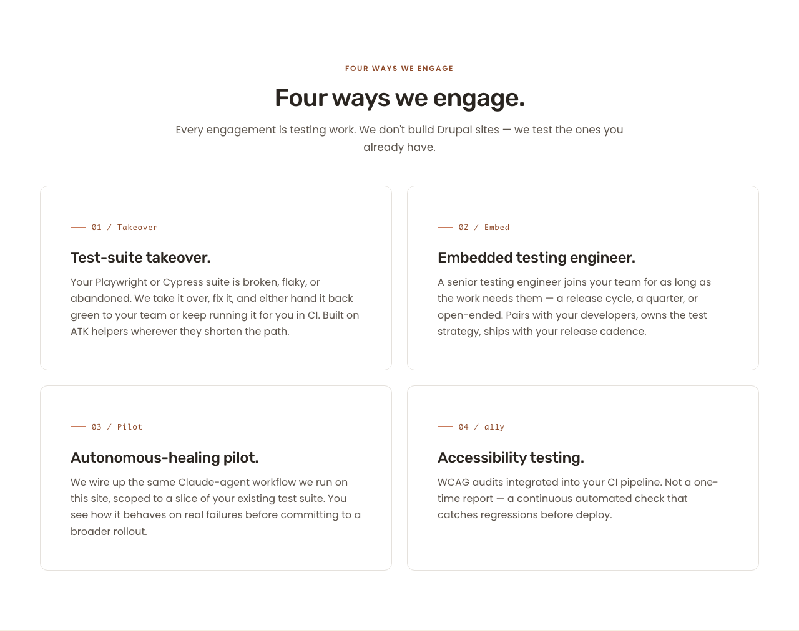
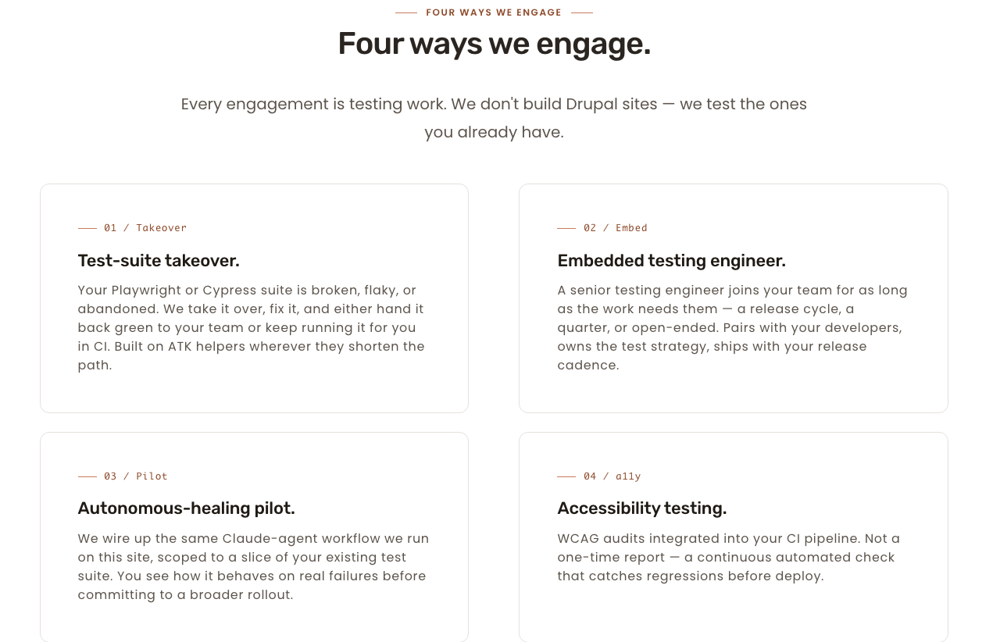
LIVE (left of slider) PREVIEW (right of slider)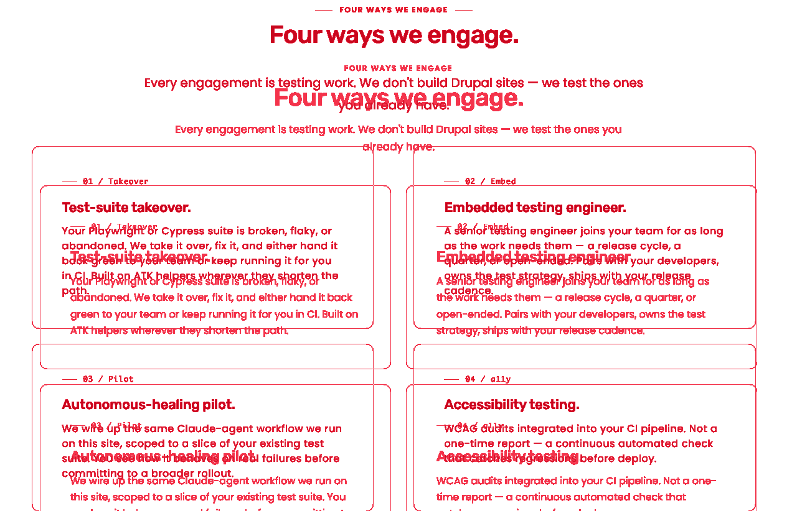
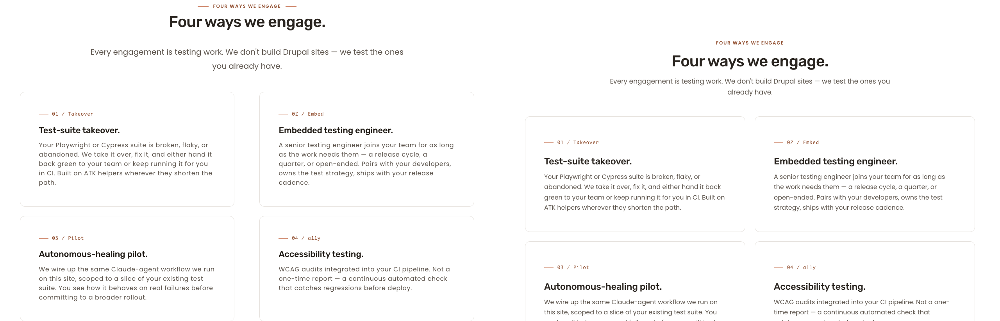
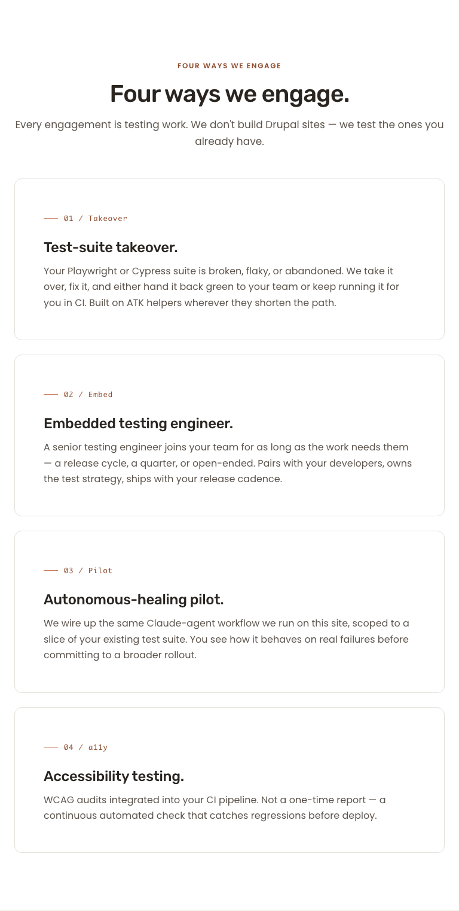
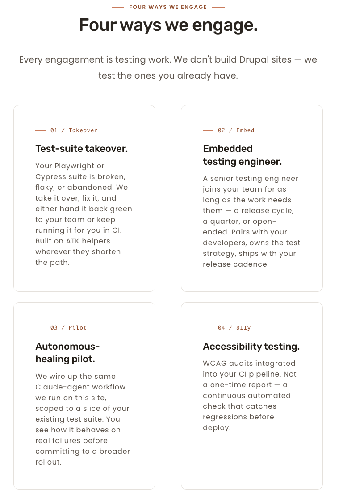
LIVE PREVIEW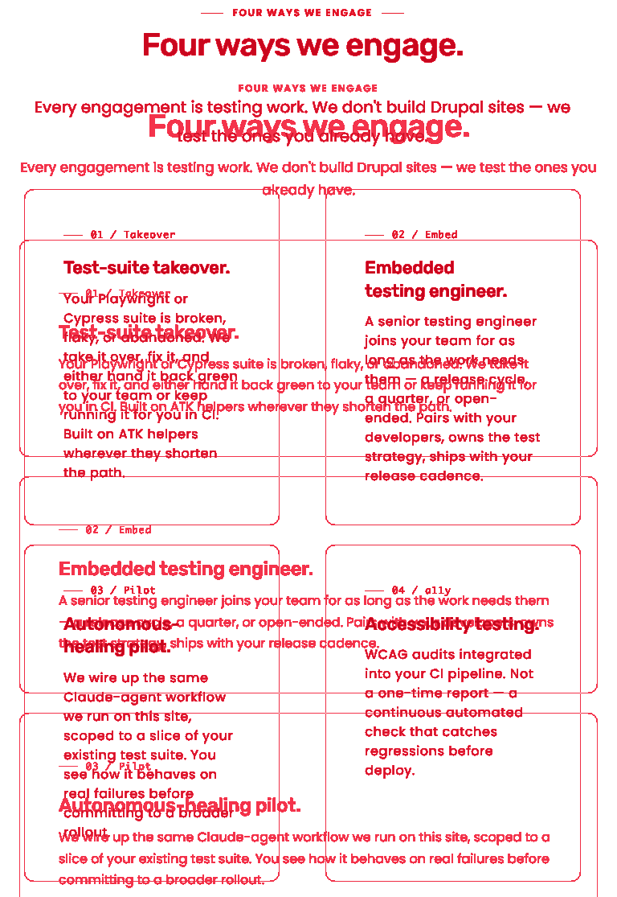
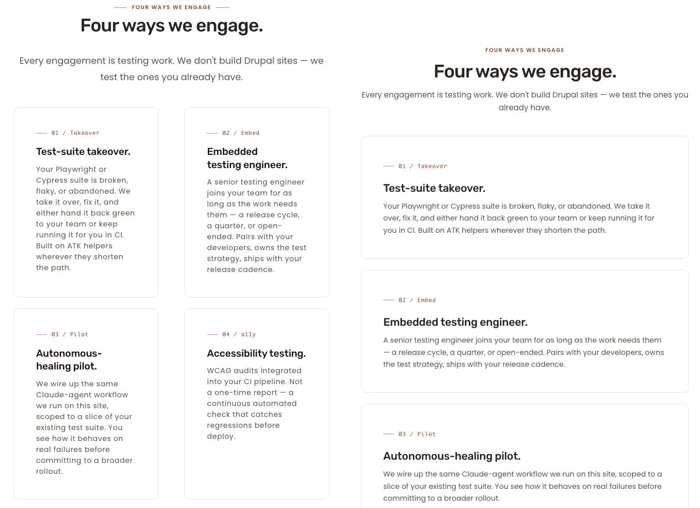
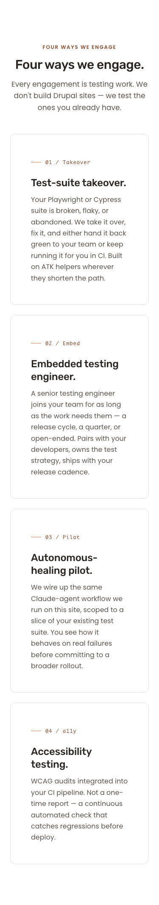
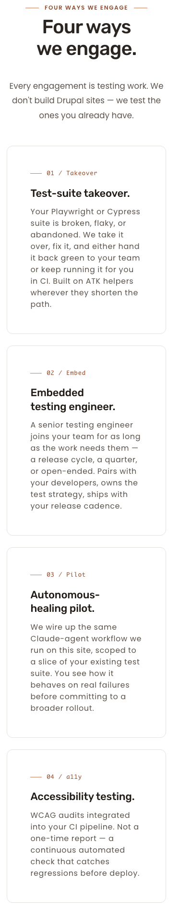
LIVE PREVIEW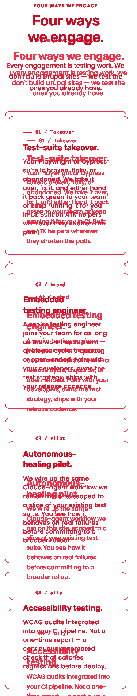
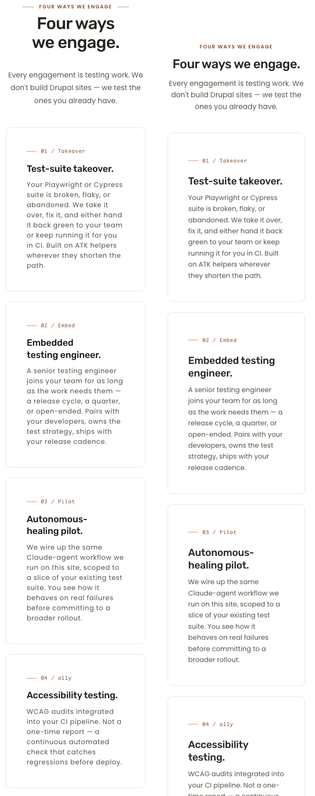
| Item | Description | Status this cycle | Evidence |
|---|---|---|---|
| E1 | Card surface — cream/canvas background + inner padding | MATCH | Both render #FFFFFF canvas card with hairline border and consistent inner padding at 1280, 768, 375. Visible in all three composites. |
| E2 | Eyebrow casing — title case | MATCH | Rendered HTML on /services confirms 01 / Takeover, 02 / Embed, 03 / Pilot, 04 / a11y. Zero uppercase. CSS text-transform: uppercase removed from .card__eyebrow-text. |
| E3 | H3 trailing periods on all four cards | MATCH | All four H3 elements include the trailing period in HTML and renders. |
| E5 | Eyebrow accent metric (terracotta hairline) | MATCH | --card-bottom-gap: 0 zeroed; margin-block-end: var(--space-lg) on .card__eyebrow-text is sole spacing. Eyebrow-to-title visual distance equivalent to preview (24 px) at all viewports. |
| E6 | Row gap between card rows | MATCH (preview-canonical 24 px) | row-gap: 1.5rem applied on .grid-wrapper--2col .grid-wrapper__grid. Matches preview's gap: var(--space-lg) exactly. Issue's "~48 px" target is overruled by the preview per source-of-truth precedence (preview wins on layout). F's choice is correct; documented in F + T handoffs. |
| Token | Brief / preview | Rendered | Match |
|---|---|---|---|
| Card surface | #FFFFFF | #FFFFFF (via L5 override on .card.theme--light) | YES |
| Card padding | preview var(--space-2xl) = 48 px | 48 px | YES (preview wins; brief's 32 px card-feature is a fallback) |
| Eyebrow color | #8E4A2A | #8E4A2A | YES |
| Eyebrow accent | #C97B5C | #C97B5C | YES |
| H3 color | #1F1A14 | #1F1A14 | YES |
| Body text | #5C544C | #5C544C | YES |
| Card border | #E5E1DC | #E5E1DC | YES |
| Row gap | preview var(--space-lg) = 24 px | 24 px | YES |
| Check | Result | Notes |
|---|---|---|
| Keyboard reachability | PASS | Engagement cards are non-interactive <article> elements in both preview and live by design; no per-card link/button exists. Section-level focus order is logical (page nav → main → site footer). |
| Focus ring visibility | PASS (advisory) | No focusable elements within the card body to require a focus ring; site-level focus rings unchanged. |
| Forced-colors mode | PASS | Engagement cards remain legible with system colors; borders, eyebrow, H3, body all visible. See wcag-forcedcolors-engagements-1280.png. |
| Reduced-motion | PASS | Cards have no entrance animation; no transition on hover for layout properties. |
| 200 % zoom | PASS | No horizontal scroll induced; engagement cards reflow correctly. See wcag-200zoom-engagements-1280.png. |
| Heading hierarchy | PASS | H1 (hero) → H2 (section) → H3 (per card). No skipped levels. (T handoff confirmed.) |
| Image alt text | N/A | No <img> elements inside the engagement cards. |
| Touch targets (375) | N/A | No per-card tap target — cards are non-interactive. Hit-area requirement not applicable. |
| Contrast — body text on card | PASS | #5C544C on #FFFFFF = 7.43:1 (AA body ≥ 4.5:1). |
| Contrast — H3 on card | PASS | #1F1A14 on #FFFFFF = 17.27:1 (AAA). |
| Contrast — eyebrow on card | PASS | #8E4A2A on #FFFFFF = 6.64:1. |
@media (max-width: 991px) rule collapses .engagements__grid to 1-column. Live keeps the 2×2 grid at 768. The Cycle 1 audit classified this as MATCH at 768; that was based on a different capture. Not in Cycle 2 scope. Recommend opening a follow-up cycle if operator wants preview-canonical breakpoints honored on live.